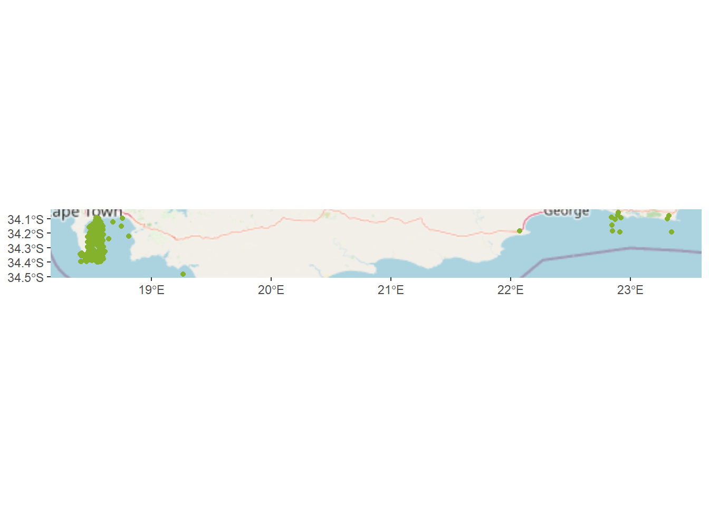

rm(list=ls())Shyshark Distribution
This is a distributional map of shysharks around the coast of Southern Africa. Shysharks are an endemic, benthic genus of sharks found along the coast of Southern African. Though there are four shyshark species, I’ve focused on two (the Puffadder shyshark or Happy Eddy - Haploblepharus edwardsii - and the Dark shyshark - H. pictus) as the Brown shyshark (H. fuscus) and Natal shyshark (H. kistnasamyi) are rather cryptic and there are only a few observations of them on iNaturalist (where I got my data).
First we start by clearing our work space.
To run the code you will need the packages tidyverse, sp, sf, raster, lwgeom, terra, stars, exactextractr, hrbrthemes,cowplot, rinat, prettymapr, ggspatial, leaflet, mapview, htmltools, leafpop, rnaturalearth, and rnaturalearthdata.
my_packages <- c("tidyverse", "sp", "sf", "raster", "lwgeom", "terra", "stars", "exactextractr", "hrbrthemes","cowplot", "rinat", "prettymapr", "ggspatial", "leaflet", "mapview", "htmltools", "leafpop", "rnaturalearth", "rnaturalearthdata")
lapply(my_packages, require, character.only = TRUE)Warning: package 'tidyverse' was built under R version 4.3.3Warning: package 'ggplot2' was built under R version 4.3.3Warning: package 'tidyr' was built under R version 4.3.3Warning: package 'purrr' was built under R version 4.3.3Warning: package 'dplyr' was built under R version 4.3.3Warning: package 'lubridate' was built under R version 4.3.3Warning: package 'sp' was built under R version 4.3.3Warning: package 'sf' was built under R version 4.3.3Warning: package 'raster' was built under R version 4.3.3Warning: package 'lwgeom' was built under R version 4.3.3Warning: package 'terra' was built under R version 4.3.3Warning: package 'stars' was built under R version 4.3.3Warning: package 'exactextractr' was built under R version 4.3.3Warning: package 'hrbrthemes' was built under R version 4.3.3Warning: package 'cowplot' was built under R version 4.3.3Warning: package 'ggspatial' was built under R version 4.3.3Warning: package 'leaflet' was built under R version 4.3.3Warning: package 'mapview' was built under R version 4.3.3Warning: package 'htmltools' was built under R version 4.3.3Warning: package 'rnaturalearth' was built under R version 4.3.3Now we’re going to get the data from iNaturalist (using the “rinat” package), and name the dataframes “puffyshark” for the Happy Eddies and “darkshark” for the dark shysharks.
puffyshark <- get_inat_obs(taxon_name = "Haploblepharus edwardsii", maxresults = 600)
darkshark <- get_inat_obs(taxon_name = "Haploblepharus pictus", maxresults = 600)To exclude observations in the northern hemisphere, observations with low positional accuracy, latitude values that are NA, and non research grade observations we use the filter function (tidyverse).
puffyshark <- puffyshark %>% filter(positional_accuracy < 100 & latitude <0 & !is.na(latitude) & quality_grade == "research")
darkshark <- darkshark %>% filter(positional_accuracy < 100 & latitude <0 & !is.na(latitude) & quality_grade == "research")In order to actually plot these data we need to make the dataframes spatial objects of the class “sf”.
puffyshark <- st_as_sf(puffyshark, coords = c("longitude", "latitude"), crs = 4326)
darkshark <- st_as_sf(darkshark, coords = c("longitude", "latitude"), crs = 4326)If we want to avoid a whole lot a pain in the future (generally a good habit to create when working with GIS) we need to check the class and coordinate reference system (CRS) of our dataframes
class(puffyshark)
class(darkshark)
st_crs(puffyshark)
st_crs(darkshark) Nice!! All systems go!
But wait! There’s some more filtering that needs to happen - we want to exclude all observations of sharks that were made on land (shoutout to ChatGPT for the help).
We start by creating a dataframe for the land surface and checking that the CRS matches our other dataframes’ CRS.
world_land <- ne_countries(scale = "medium", returnclass = "sf", country = "south africa")
st_crs(world_land)Next we need to spatially join this dataframe to ID the shark observations on land and create new dataframes without those observations.
landsharks_ps <- st_join(puffyshark, world_land, join = st_disjoint) %>% filter(!is.na(iso_a2))
oceanshark_ps <- puffyshark[puffyshark$geometry %in% landsharks_ps$geometry,]
landsharks_ds <- st_join(darkshark, world_land, join = st_disjoint) %>% filter(!is.na(iso_a2))
oceanshark_ds <- darkshark[darkshark$geometry %in% landsharks_ds$geometry,]Let’s see if that worked by plotting these data.
ggplot() +
annotation_map_tile(type = "osm", progress = "none") +
geom_sf(data = oceanshark_ps, color = "#85B22C")
ggplot() +
annotation_map_tile(type = "osm", progress = "none") +
geom_sf(data = oceanshark_ds, color = "#422CB2")Hmm. It would be more helpful if both species were on one map…
ggplot() +
annotation_map_tile(type = "osm", progress = "none") +
geom_sf(data = oceanshark_ps, color = "#85B22C") +
geom_sf(data = oceanshark_ds, color = "#422CB2")That’s better!
Now the fun part - creating interactive maps with both species (with the leaflet package)!
leaflet() %>%
addTiles(group = "Default") %>%
addCircleMarkers(data = oceanshark_ps,
group = "Haploblepharus edwardsii",
radius = 1,
color = "#85B22C")%>%
addCircleMarkers(data = oceanshark_ds,
group = "Haploblepharus pictus",
radius = 1,
color = "#422CB2")%>%
addLegend(position = "topright",
colors = c("#85B22C", "#422CB2"),
labels = c("Puffadder shyshark", "Dark shyshark"))Let’s try a different package - mapview - to create an interactive map with a popup for each data point that gives a link to that point’s iNaturalist observation.
First thing’s first - let’s make the links possible (thank you Jasper Slingsby for making this particular skulduggery possible).
loceanshark_ps <- oceanshark_ps %>%
mutate(click_url = paste("<b><a href='", url, "'>Link to iNat observation</a></b>"))
loceanshark_ds <- oceanshark_ds %>%
mutate(click_url = paste("<b><a href='", url, "'>Link to iNat observation</a></b>"))Finally - let’s create an interactive map with links to iNaturalist observations!
mapview(oceanshark_ps, col.regions = "#85B22C", layer.name = "Puffadder shyshark", legend = TRUE,
popup =
popupTable(loceanshark_ps,
zcol = c("user_login", "click_url", "id"))) +
mapview(oceanshark_ds, col.regions = "#422CB2", layer.name = "Dark shyshark", legend = TRUE,
popup =
popupTable(loceanshark_ds,
zcol = c("user_login", "click_url", "id")))Anywho - thank you for sticking with me through this! As a reward here’s a little picture of a shyshark I took a while back.

Happy Eddy - ‘Haploblepharus edwardsii’ - photographed at Windmill Beach, Cape Town.
Okay - SO LONG AND THANKS FOR ALL THE FISH!!
Thank you Jasper Slingsby for providing the base code for this. To access it go to his teaching website plantecolo.gy.